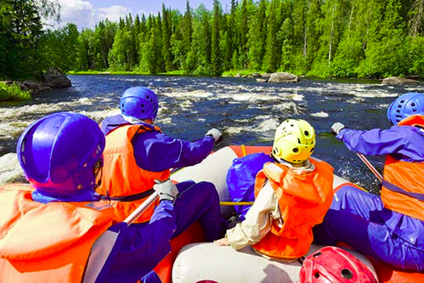

Adventure Trips
Whitewater Rafting Excursions
Experience the thrill of whitewater rafting with our expertly guided trips designed to cater to all adventure levels. Whether you're a seasoned rafter looking for an adrenaline-pumping challenge or a family seeking a fun and safe introduction to the sport, we have the perfect adventure waiting for you.
Step up the adventure with our intermediate trips featuring class III rapids. Perfect for those with some rafting experience or adventurous beginners, these trips offer a mix of calm waters and thrilling waves. Feel the rush as you tackle the rapids, and take in the breathtaking surroundings during the calmer stretches of the river.
Adventure Awaits You!
Duration: 15 km • 4 - 5 hours on the river
Duration: 15 km • 5 - 6 hours on the river
Duration: 15 km • 8 - 10 hours on the river
| Trip | Duration | Time on River |
|---|---|---|
| Trip 1 | 15 km | 4 - 5 hours |
| Trip 2 | 15 km | 5 - 6 hours |
| Trip 3 | 15 km | 8 - 10 hours |